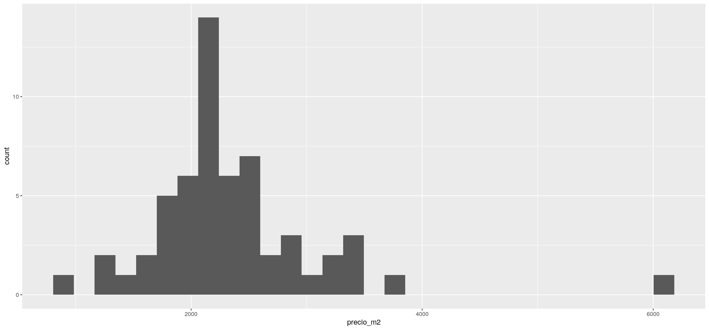

8.2 Práctica Guiada
8.2.1 Datos de Properati
Para este ejercicio utilizaremos los datos provistos por Properati: https://www.properati.com.ar/data/
Primero acondicionamos la base original, para quedarnos con una base más fácil de trabajar, y que contiene unicamente los datos interesantes. (no es necesario correrlo)
## Observations: 52,246
## Variables: 9
## $ id <chr> "OgLe3YSDR0da+JUQZgmTtA==", "Z3j1BtQN1kzuJr20com…
## $ created_on <date> 2019-05-09, 2019-05-09, 2019-05-09, 2019-05-09,…
## $ l3 <chr> "Nuñez", "Nuñez", "Almagro", "Belgrano", "Flores…
## $ rooms <dbl> 3, 3, 3, 5, 5, 3, 3, 2, 5, 5, 4, 2, 3, 5, 3, 3, …
## $ bathrooms <dbl> 1, 1, 1, 2, 2, 1, 1, 1, 2, 1, 1, 1, 2, 4, 2, 3, …
## $ surface_total <dbl> 77, 97, 69, 230, 168, 65, 95, 50, 181, 180, 89, …
## $ surface_covered <dbl> 68, 65, 69, 200, 168, 65, 92, 38, 110, 120, 118,…
## $ price <dbl> 180000, 265000, 230000, 380000, 255000, 119000, …
## $ property_type <chr> "PH", "PH", "PH", "PH", "PH", "PH", "PH", "PH", …## Min. 1st Qu. Median Mean 3rd Qu. Max.
## 6000 119000 170000 251944 272000 6000000## # A tibble: 4 x 9
## id created_on l3 rooms bathrooms surface_total surface_covered
## <chr> <date> <chr> <dbl> <dbl> <dbl> <dbl>
## 1 uZe6… 2019-03-28 Pale… 5 4 340 320
## 2 +JnI… 2019-04-01 Parq… 1 1 31 31
## 3 MEQM… 2019-03-15 Puer… 3 3 275 220
## 4 o6Qf… 2019-04-30 Reco… 3 2 340 200
## # … with 2 more variables: price <dbl>, property_type <chr>Tenemos un par de outliers que no tienen mucho sentido. Es posible que el precio este mal cargado.
## # A tibble: 11 x 9
## id created_on l3 rooms bathrooms surface_total surface_covered
## <chr> <date> <chr> <dbl> <dbl> <dbl> <dbl>
## 1 Z0NE… 2019-04-13 Reco… 6 3 600 600
## 2 gRZz… 2019-01-25 Reco… 6 3 600 600
## 3 sP/J… 2019-05-18 Reco… 8 5 677 568
## 4 VVkm… 2019-04-05 Reco… 10 3 978 489
## 5 h6gp… 2019-06-15 Reco… 6 3 600 600
## 6 HWNt… 2019-06-19 San … 3 1 60 56
## 7 e2Wf… 2019-01-28 Pale… 4 4 404 404
## 8 OzkE… 2019-01-28 Pale… 4 4 404 404
## 9 6DhC… 2019-02-01 Caba… 1 1 41 37
## 10 Jz4a… 2019-03-01 Caba… 1 1 41 37
## 11 1R9Q… 2019-01-17 Caba… 1 1 41 37
## # … with 2 more variables: price <dbl>, property_type <chr>Los precios más alto tienen algunas cosas sorprendentes, pero sería arriesgado descartarlos por errores.
##
## Call:
## lm(formula = price ~ l3 + rooms + bathrooms + surface_total +
## property_type, data = df)
##
## Residuals:
## Min 1Q Median 3Q Max
## -2152714 -72322 -4147 46114 5284489
##
## Coefficients:
## Estimate Std. Error t value Pr(>|t|)
## (Intercept) -1.599e+05 1.388e+04 -11.520 < 2e-16 ***
## l3Agronomía 2.024e+04 2.605e+04 0.777 0.437102
## l3Almagro -7.962e+03 1.295e+04 -0.615 0.538764
## l3Balvanera -2.616e+04 1.360e+04 -1.924 0.054387 .
## l3Barracas 5.459e+02 1.591e+04 0.034 0.972629
## l3Barrio Norte 6.416e+04 1.331e+04 4.821 1.43e-06 ***
## l3Belgrano 1.212e+05 1.290e+04 9.396 < 2e-16 ***
## l3Boca -4.934e+04 2.020e+04 -2.443 0.014559 *
## l3Boedo -1.421e+04 1.553e+04 -0.915 0.360345
## l3Caballito 6.359e+03 1.298e+04 0.490 0.624125
## l3Catalinas -2.566e+04 1.059e+05 -0.242 0.808533
## l3Centro / Microcentro -3.333e+04 1.969e+04 -1.693 0.090542 .
## l3Chacarita 2.843e+04 1.609e+04 1.768 0.077139 .
## l3Coghlan 5.894e+04 1.643e+04 3.587 0.000335 ***
## l3Colegiales 3.945e+04 1.455e+04 2.710 0.006724 **
## l3Congreso -2.853e+04 1.610e+04 -1.773 0.076275 .
## l3Constitución -2.953e+04 1.767e+04 -1.671 0.094633 .
## l3Flores -2.403e+04 1.363e+04 -1.763 0.077967 .
## l3Floresta -1.220e+04 1.516e+04 -0.804 0.421184
## l3Las Cañitas 1.193e+05 1.758e+04 6.785 1.17e-11 ***
## l3Liniers -2.029e+04 1.592e+04 -1.275 0.202348
## l3Mataderos -3.332e+04 1.612e+04 -2.067 0.038736 *
## l3Monserrat -9.560e+03 1.570e+04 -0.609 0.542461
## l3Monte Castro 1.875e+04 1.793e+04 1.046 0.295781
## l3Nuñez 9.191e+04 1.373e+04 6.695 2.18e-11 ***
## l3Once -2.203e+04 1.598e+04 -1.379 0.168006
## l3Palermo 1.276e+05 1.272e+04 10.033 < 2e-16 ***
## l3Parque Avellaneda -1.666e+04 2.199e+04 -0.758 0.448651
## l3Parque Centenario -3.832e+04 1.523e+04 -2.515 0.011903 *
## l3Parque Chacabuco -1.329e+03 1.569e+04 -0.085 0.932517
## l3Parque Chas 2.209e+04 2.267e+04 0.975 0.329726
## l3Parque Patricios -1.126e+04 1.768e+04 -0.637 0.524163
## l3Paternal -2.778e+03 1.550e+04 -0.179 0.857733
## l3Pompeya -6.158e+04 2.211e+04 -2.786 0.005340 **
## l3Puerto Madero 5.295e+05 1.457e+04 36.353 < 2e-16 ***
## l3Recoleta 1.294e+05 1.309e+04 9.883 < 2e-16 ***
## l3Retiro 7.507e+04 1.571e+04 4.779 1.76e-06 ***
## l3Saavedra 3.674e+04 1.485e+04 2.473 0.013387 *
## l3San Cristobal -1.197e+04 1.479e+04 -0.809 0.418323
## l3San Nicolás -4.616e+03 1.534e+04 -0.301 0.763503
## l3San Telmo 1.763e+04 1.460e+04 1.208 0.227176
## l3Tribunales -4.234e+04 2.555e+04 -1.657 0.097553 .
## l3Velez Sarsfield 1.664e+03 2.487e+04 0.067 0.946644
## l3Versalles 4.516e+03 1.988e+04 0.227 0.820295
## l3Villa Crespo 1.072e+04 1.303e+04 0.823 0.410681
## l3Villa del Parque 2.440e+04 1.470e+04 1.660 0.096951 .
## l3Villa Devoto 3.089e+04 1.440e+04 2.146 0.031896 *
## l3Villa General Mitre -2.567e+04 2.024e+04 -1.268 0.204656
## l3Villa Lugano -1.002e+05 1.749e+04 -5.729 1.02e-08 ***
## l3Villa Luro 7.208e+03 1.617e+04 0.446 0.655849
## l3Villa Ortuzar 2.826e+04 2.042e+04 1.383 0.166525
## l3Villa Pueyrredón 2.686e+04 1.590e+04 1.689 0.091191 .
## l3Villa Real 1.343e+04 2.592e+04 0.518 0.604258
## l3Villa Riachuelo -5.135e+04 4.988e+04 -1.029 0.303274
## l3Villa Santa Rita 6.264e+03 1.909e+04 0.328 0.742874
## l3Villa Soldati -9.211e+04 3.636e+04 -2.534 0.011295 *
## l3Villa Urquiza 4.076e+04 1.333e+04 3.058 0.002230 **
## rooms 5.199e+04 8.989e+02 57.839 < 2e-16 ***
## bathrooms 1.419e+05 1.461e+03 97.128 < 2e-16 ***
## surface_total 5.808e+00 1.141e+00 5.092 3.56e-07 ***
## property_typeDepartamento 4.855e+03 5.267e+03 0.922 0.356609
## property_typePH -4.780e+04 5.691e+03 -8.399 < 2e-16 ***
## ---
## Signif. codes: 0 '***' 0.001 '**' 0.01 '*' 0.05 '.' 0.1 ' ' 1
##
## Residual standard error: 210300 on 52180 degrees of freedom
## Multiple R-squared: 0.4872, Adjusted R-squared: 0.4866
## F-statistic: 812.7 on 61 and 52180 DF, p-value: < 2.2e-16¿ Qué pasó con las variables no numéricas? ¿Son significativos los estimadores? ¿cuales? ¿Cómo se leen los valores de los estimadores?
Dado que muchos de los barrios no explican significativamente los cambios en los precios, no esta bueno conservarlos todos. A su vez, no sabemos respecto a qué barrio se compara.
Una solución puede ser agrupar los barrios en tres categorías respecto a su efecto en el precio:
- Alto
- Medio
- Bajo
En particular, podemos notar de esta primera regresión que algunos barrios tienen un efecto significativo en subir el valor de la propiedad, como Belgrano o Recoleta.
Para construir la nueva variable, podemos ver el precio promedio del metro cuadrado por barrio

## Min. 1st Qu. Median Mean 3rd Qu. Max.
## 871.2 2031.8 2147.3 2346.0 2560.0 6068.5Con este gráfico vemos que que hay muchos barrios con un precio promedio cercano a 2500 dólares el \(m^2\).
Podemos dividr los tres grupos al rededor de los quartiles 1 y 3.
- <2000 bajo
- 2000-2500 medio
2500 alto
## # A tibble: 10 x 3
## l3 precio_m2 barrio
## <chr> <dbl> <chr>
## 1 Belgrano 3421. alto
## 2 Coghlan 2780. alto
## 3 Villa Real 2065. medio
## 4 San Telmo 2398. medio
## 5 Villa Luro 2147. medio
## 6 Puerto Madero 6069. alto
## 7 Constitución 1758. bajo
## 8 Recoleta 3357. alto
## 9 Parque Avellaneda 1616. bajo
## 10 Las Cañitas 3724. altoCon esta nueva variable podemos modificar la tabla original.
y volvemos a calcular el modelo
##
## Call:
## lm(formula = price ~ barrio + rooms + bathrooms + surface_total +
## property_type, data = df)
##
## Residuals:
## Min 1Q Median 3Q Max
## -2145645 -71277 -11187 42472 5307946
##
## Coefficients:
## Estimate Std. Error t value Pr(>|t|)
## (Intercept) -1.041e+05 6.349e+03 -16.396 < 2e-16 ***
## barriobajo -1.097e+05 4.231e+03 -25.939 < 2e-16 ***
## barriomedio -9.342e+04 2.150e+03 -43.445 < 2e-16 ***
## rooms 4.808e+04 9.293e+02 51.732 < 2e-16 ***
## bathrooms 1.602e+05 1.499e+03 106.867 < 2e-16 ***
## surface_total 5.485e+00 1.198e+00 4.580 4.67e-06 ***
## property_typeDepartamento 2.370e+04 5.352e+03 4.428 9.51e-06 ***
## property_typePH -3.906e+04 5.920e+03 -6.598 4.22e-11 ***
## ---
## Signif. codes: 0 '***' 0.001 '**' 0.01 '*' 0.05 '.' 0.1 ' ' 1
##
## Residual standard error: 220800 on 52234 degrees of freedom
## Multiple R-squared: 0.4338, Adjusted R-squared: 0.4338
## F-statistic: 5718 on 7 and 52234 DF, p-value: < 2.2e-16Si queremos que compare contra ‘barrio medio’ podemos convertir la variable en factor y explicitar los niveles
##
## Call:
## lm(formula = price ~ barrio + rooms + bathrooms + surface_total +
## property_type, data = df)
##
## Residuals:
## Min 1Q Median 3Q Max
## -2145645 -71277 -11187 42472 5307946
##
## Coefficients:
## Estimate Std. Error t value Pr(>|t|)
## (Intercept) -1.975e+05 6.215e+03 -31.783 < 2e-16 ***
## barrioalto 9.342e+04 2.150e+03 43.445 < 2e-16 ***
## barriobajo -1.632e+04 4.321e+03 -3.777 0.000159 ***
## rooms 4.808e+04 9.293e+02 51.732 < 2e-16 ***
## bathrooms 1.602e+05 1.499e+03 106.867 < 2e-16 ***
## surface_total 5.485e+00 1.198e+00 4.580 4.67e-06 ***
## property_typeDepartamento 2.370e+04 5.352e+03 4.428 9.51e-06 ***
## property_typePH -3.906e+04 5.920e+03 -6.598 4.22e-11 ***
## ---
## Signif. codes: 0 '***' 0.001 '**' 0.01 '*' 0.05 '.' 0.1 ' ' 1
##
## Residual standard error: 220800 on 52234 degrees of freedom
## Multiple R-squared: 0.4338, Adjusted R-squared: 0.4338
## F-statistic: 5718 on 7 and 52234 DF, p-value: < 2.2e-168.2.1.1 Feature engineering.
Lo que hicimos arriba con los barrios se conoce como feature engineerin: Generamos una nueva variable a partir de las anteriores para mejorar nuestro modelo.
¿Qué otras modificaciones podemos hacer?
- Hay una que ya hicimos: En lugar de pensar en el precio total, podemos pensar en el precio por \(m^2\). De esta manera ya no tendría sentido agregar la variable surface_total
##
## Call:
## lm(formula = precio_m2 ~ barrio + rooms + bathrooms + property_type,
## data = df)
##
## Residuals:
## Min 1Q Median 3Q Max
## -2071.97 -241.41 55.51 214.05 2993.52
##
## Coefficients:
## Estimate Std. Error t value Pr(>|t|)
## (Intercept) 1935.419 13.106 147.670 < 2e-16 ***
## barrioalto 892.491 4.535 196.790 < 2e-16 ***
## barriobajo -461.046 9.112 -50.595 < 2e-16 ***
## rooms -22.684 1.959 -11.579 < 2e-16 ***
## bathrooms 133.009 3.161 42.084 < 2e-16 ***
## property_typeDepartamento 227.481 11.285 20.158 < 2e-16 ***
## property_typePH 99.545 12.485 7.973 1.58e-15 ***
## ---
## Signif. codes: 0 '***' 0.001 '**' 0.01 '*' 0.05 '.' 0.1 ' ' 1
##
## Residual standard error: 465.7 on 52235 degrees of freedom
## Multiple R-squared: 0.552, Adjusted R-squared: 0.5519
## F-statistic: 1.073e+04 on 6 and 52235 DF, p-value: < 2.2e-16que pasó con rooms?
Al normalizar el precio por los metros, rooms pasa de tomar valores positivos a negativos. Eso significa que rooms estaba correlacionado con el tamaño, y por lo tanto cuantos más cuartos, mayor el valor. Al normalizar podemos ver que, dado un metraje, más cuartos reducen el precio: Preferimos ambientes más grandes tal vez?
predecir
Para predecir un nuevo caso, podemos construir un dataframe con las variables. Por ejemplo
## 1
## 3253.356Pero debemos recordar que este es el valor por metro cuadrado. Para obtener lo que realmente nos interesa, tenemos que hacer el camino inverso del feature engenieering:
## 1
## 253761.88.2.1.2 Para seguir practicando
Un problema de lo que vimos en esta práctica es que las salidas de summary(lm_fit) es una impresión en la consola. Es muy difícil seguir trabajando con esos resultados. Para resolver esto hay un par de librerías que incorporan el modelado lineal al flujo del tidyverse: